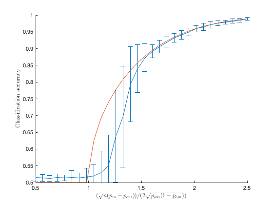

Section 7.1.1: The stochastic block model
This page contains simulations in Section 7.1.1.
Contents
Classification accuracy of a  -class symmetric SBM
-class symmetric SBM
close all; clear; clc coeff = 1; n = 512*coeff; pout=.4; range_pin= pout + linspace(0.5,2.5,30)*(2*sqrt(pout*(1-pout))/sqrt(n)); cs = [1/2 1/2]; k = length(cs); loops = 100; classif_emp = zeros(length(range_pin),loops); classif_theo = zeros(length(range_pin),1); i=1; for pin=range_pin for loop=1:loops A11 = binornd(1,pin,n*cs(1),n*cs(1)); A11 = tril(A11,-1)+tril(A11,-1)'; A22 = binornd(1,pin,n*cs(2),n*cs(2)); A22 = tril(A22,-1)+tril(A22,-1)'; A12 = binornd(1,pout,n*cs(1),n*cs(2)); A = [A11 A12; A12' A22]; A = A - diag(A); d = A*ones(n,1); B = 1/sqrt(pout*(1-pout)*n)*(A-d*d'/sum(d)); % slightly different from the notation in the book [u,~] = eigs(B,1); classif_emp(i,loop) = max(sum(u(1:cs(1)*n)>0)+sum(u(cs(1)*n+1:n)<0),sum(u(1:cs(1)*n)<0)+sum(u(cs(1)*n+1:n)>0))/n; end if abs(pin - pout)> 2*sqrt(pout*(1-pout)/n) classif_theo(i) = 1 - qfunc(sqrt( n*(pin-pout)^2/4/pout/(1-pout) - 1)); else classif_theo(i) = 0.5; end i=i+1; end range_dif = sqrt(n)*(range_pin-pout)/2/sqrt(pout*(1-pout)); figure; hold on; errorbar(range_dif,mean(classif_emp,2), std(classif_emp,1,2)); plot(range_dif,classif_theo); axis([min(range_dif), max(range_dif), 0.5, 1]) xlabel('$(\sqrt{n}(p_{\rm in}-p_{\rm out}))/(2\sqrt{p_{\rm out}(1-p_{\rm out})})$', 'Interpreter', 'latex') ylabel('Classification accuracy', 'Interpreter', 'latex')